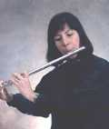

 Flutist Sue McKenzie graduated from Illinois State University with a degree in Music Education. She is currently principal flute with the Chicago Symphonic Pops Orchestra and the Harper Symphony. In addition to the McKenzie Duo, Sue works with a number of other chamber groups, including the Baroque Babes, harpists Jo Yu Hoffmann and Molly McKenzie. Sue has been active as a studio musician and in the pit orchestra for many musical theater productions.
Guitarist Mark McKenzie settled on the classical guitar as his primary interest after years of playing electric guitar in rock and jazz groups. Mark is also a prolific composer and arranger, having written for groups ranging from a simple duo to full jazz orchestra. His transcriptions have added numerous works to the McKenzie Duo repertoire.